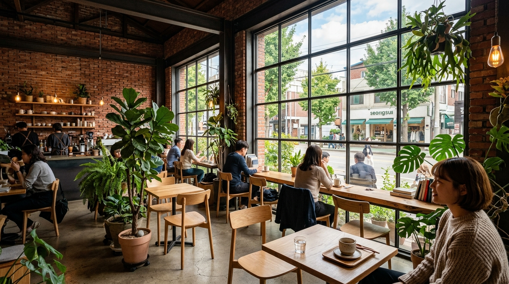
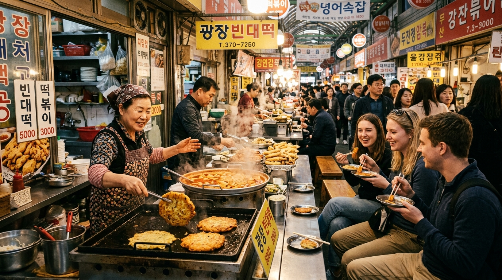

カフェ・ポップアップ聖水洞 (ソンス)
地下鉄2号線 聖水駅かつての靴工場や倉庫をリノベーションしたカフェ、韓国コスメ・アパレルの最先端ポップアップストアが密集する今ソウルで最も熱いトレンド発信地。
おすすめ: カフェ巡り・限定グッズ
韓国の移動はキャッシュレスが主流です。旅のスタイルに合った交通カードを選びましょう。
韓国全土の地下鉄・バス・タクシー・コンビニ
日本円チャージ対応 + T-money機能搭載
ソウル市内公共交通 短期観光パス(1/2/3/5/7日券)
韓国では国家セキュリティ規制により、Googleマップでの徒歩ルート案内が正常に機能しません。日本語対応の「NAVERマップ(네이버지도)」を事前にダウンロードしておくと、出口番号や徒歩経路を正確に案内してくれます。
トレンドの発信地から伝統的な街並みまで、目的別で探せます。

カフェ・ポップアップかつての靴工場や倉庫をリノベーションしたカフェ、韓国コスメ・アパレルの最先端ポップアップストアが密集する今ソウルで最も熱いトレンド発信地。
ストリートファッション、個性的な雑貨店、路上ライブが楽しめる活気あふれる街。空港鉄道1本でアクセスでき、深夜まで飲食店が営業しています。
日本語が通じる店舗が多く、両替レートが良い中国大使館前両替所やコスメ専門店、夕方から出現する多彩な屋台グルメが楽しめる定番エリア。
韓国の伝統家屋（韓屋）を美しくリノベーションしたベーカリーカフェや雑貨店が細い路地に並びます。韓服体験スポットとしても有名。
広大な室内庭園と自然光が注ぐソウル最大級のランドマーク百貨店。地下2階にはK-POPや最旬韓国ブランドのブティックが集結しています。

ローカル市場100年以上の歴史を誇る伝統市場。ピンデトッ(緑豆チヂミ)、ユッケ、麻薬キンパなど、活気あふれる屋台で本場の味をリーズナブルに味わえます。
スマホ画面を見せるだけで通じる！コピーボタンをタップして翻訳アプリやメモにも貼り付けられます。
これ1つください
이거 하나 주세요.
[イゴ ハナ ジュセヨ]
あまり辛くしないでください
덜 맵게 해주세요.
[トル メプケ ヘジュセヨ]
持ち帰りにしてください(テイクアウト)
포장해 주세요.
[ポジャンヘ ジュセヨ]
いくらですか？
얼마예요?
[オルマエヨ？]
カード決済できますか？
카드 결제 되나요?
[カドゥ キョルジェ デナヨ？]
免税のレシートをください
텍스 리펀 영수증 주세요.
[テクス リポン ヨンスジュン ジュセヨ]
明洞駅へ行ってください(タクシー)
명동역으로 가주세요.
[ミョンドンヨグロ カジュセヨ]
お手洗いはどこですか？
화장실이 어디예요?
[ファジャンシリ オディエヨ？]
助けてください
도와주세요.
[トワジュセヨ]
日本語ができるスタッフはいますか？
일본어 가능한 직원 있나요?
[イルボノ カヌンハン チグォン インナヨ？]
基準レート目安: 100 KRW ≒ 約 11.2 円 (参考値)
困ったときは一人で悩まず、公的な無料日本語通訳サービスを利用しましょう。
韓国観光公社が運営する公式コールセンター。道案内、観光情報だけでなく、タクシー運転手や店舗とのトラブル時の3者通話通訳も無料で対応。
盗難や紛失などの警察通報は「112」。急な発熱、怪我などの救急車要請は「119」。外国人通報時は自動通訳サービスへ接続されます。
1店舗あたり15,000ウォン以上のお買い物で免税対象。店頭即時免税（パスポート提示でその場で減額）または空港キオスクで手続き可能です。